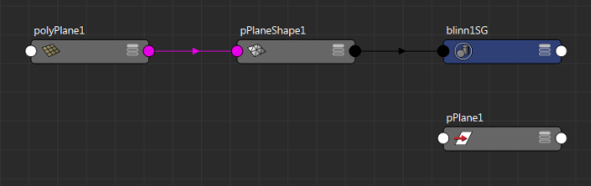
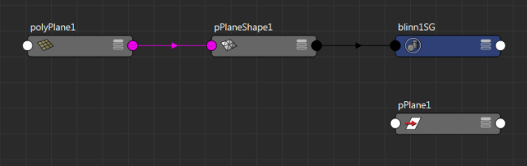
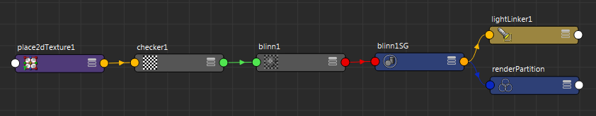

-
选择对象，然后单击节点编辑器工具栏中的
 。形状、变换和历史节点以及连接到形状节点的着色组节点（在本例中为 blinn1SG）均显示在图表中。

。形状、变换和历史节点以及连接到形状节点的着色组节点（在本例中为 blinn1SG）均显示在图表中。
 -
选择着色组节点并单击
。现在，着色器网络在节点编辑器中用曲线图表示。

提示：
- 尽管可以在节点编辑器中对着色器网络制图，但 Hypershade 是用于创建着色器的首选编辑器。有关 Hypershade 的详细信息，请参见使用 Hypershade 的外观开发。
- 若要显示指定给场景中每个对象的着色器，请打开大纲视图，然后在菜单中启用“显示 > 指定的材质”(Display > Assigned Materials)。请参见标识指定给场景中对象的着色器。
- 在大纲视图中，在材质上单击鼠标右键并选择“在 Hypershade 中打开”(Open in Hypershade)。在 Hypershade 中，单击工作区工具栏中的 可对着色器网络制图。